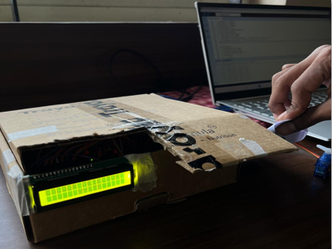
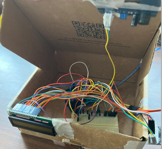
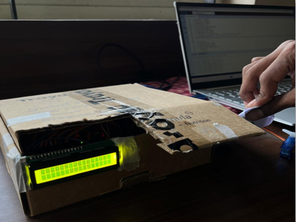
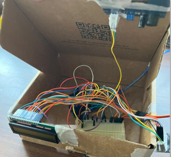

Colour-Based Object Sorting System
An automated proof-of-concept system that sorts physical objects using image processing and microcontroller control.
The Problem
Traditional industrial sorting methods are often performed manually, which can lead to inefficiencies, human error, and reduced productivity. The challenge was to design and build an automated sorting machine that could efficiently categorize objects based on both color and the presence of metal. The primary goal was to create a system that enhances sorting accuracy and speed, thereby reducing the need for human intervention and improving operational efficiency in industries like recycling and manufacturing.
My Role
Hardware integration, image processing, and backend logic.
Technologies Used
Python, OpenCV, Arduino, Serial Communication, Flask (for UI), HTML, CSS, etc.
The Process & Solution
We developed a proof-of-concept prototype controlled by an Arduino Uno board. The system integrates multiple sensors to achieve its sorting goals. For color identification, a TCS3200 Color Sensor was used to detect the specific RGB (Red, Green, Blue) values of an object placed in the sorting area. To detect metallic objects, an Inductive Proximity Sensor was incorporated into the system. The logic was implemented using custom code written in the Arduino IDE. The code reads the frequency output from the color sensor to determine the dominant color (e.g., Red, Green, Blue, White, Black). Based on the detected color or metal presence, the Arduino sends a signal to a servo motor, which moves a sorting arm to a pre-defined position to categorize the object. A 16x2 LCD Display provides a user-friendly interface, showing the real-time status and the detected color of the object being sorted. The entire electronic circuit was assembled on a breadboard and housed within a custom-built chassis**
 



The Outcome
The project was a success, resulting in a functional prototype that could accurately sort objects based on multiple parameters. The system achieved high precision in color classification and successfully integrated metal detection, meeting the core goals of the project. This mini-project was an excellent exercise in hardware-software integration, demonstrating key skills in embedded systems programming, sensor interfacing, and actuator control. The final prototype effectively showcased a solution to automate and improve the efficiency of traditional sorting processes.